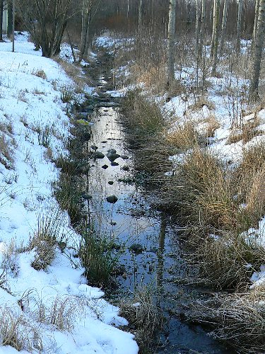

Lomaa - Heureka
Sami halusi ehdottomasti päästä joululomalla Heurekan planetaarioon katsomaan "Kosmisia törmyksiä". Ohjelmassa selvisi, että kuu on aikanaan syntynyt Maan ja toisen lähes saman kokoisen taivaankappalleen törmäyksessä. Planetaarion "valkokankaalla" tämä törmäys oli sen verran raju ja kovaääninen, että pienempiä lapsia alkoi jo pelottaa. Sami sen sijaan ei ollut moksiskaan.
Pari mielenkiintoista asiaa jäi mieleen. Tuossa törmäyksessä maasta irtosi suuret määrät ainesta, josta kuu siis syntyi. Tämähän tiedetään, mutta yllättävää oli se, että tuo maata kiertämään jäänyt aines kasaantui yhteen muutamissa päivissä! Näin väittivät.
Toinen mielenkiintoinen asia koski galaksien törmäystä. Vaikka miljardeja tähtiä käsittävät Linnunrata ja Andromedan galaksi kieppuivat animaatiossa villisti limittäin ja lomittain, niin tähdet eivät kuulemma kuitenkaan törmäile toisiinsa. Galaksit ovat enimmäkseen tyhjää ja tähdet ovat varsin kaukana toisistaan ja kieppuminenkaan ei ole niin villiä, sillä puoli minuuttia silmiemme edessä kestäisi todellisuudessa satoja miljoonia vuosia.
Kielivalintoja
Pienen kielialueen kansana meidän suomalaisten on hyvä osata vieraita kieliä. Tänä päivänä vähintäänkin englannin kielen taito on suorastaan välttämätön. Se on tietotekniikassa käytetty kieli ja monikansallisissa yrityksissä se on jopa virallinen kieli. Eikä sen tarpeellisuutta voi muissakaan yrityksissä ja muilla elämänalueilla kieltää.
Toisen kouluvuoden keväällä oppilaat tekevät valinnan, mitä pakollista, pitkää vierasta kieltä he alkavat opiskella kolmannelta luokalta alkaen. Puistolan alueen kouluissa ainoana vaihtoehtona oli tänä vuonna englanti. Oppilaista 80 % valitsee ensimmäiseksi kieleksi englannin, joten sitä tarjotaan jokaisessa alueen koulussa. Tästäkin syystä oli luontevaa, että Sami valitsi englannin niin sanotuksi A1-kieleksi.
Olimme vanhempien infotilaisuudessa kuulemassa asiaa kielten opiskelusta. Ilahduttavaa oli kuulla, että nykyisin opiskelu painottuu paljon kuunteluun ja puhumiseen, millä luodaan valmiuksia suulliseen kanssakäymiseen vieraalla kielellä. Silloin aikanaan, kun me opiskelimme, opeteltiin kielioppia, sanastoa ja kääntämistä, ja tärkeintä oli, ettei tehnyt virheitä. Niinpä kymmenen vuoden opiskelun jälkeen kyky ymmärtää puhuttua englannin kieltä ja rohkeus itse puhua sitä olivat olemattomia.
Muutamien viime vuosien aikana olen joutunut työssäni käyttämään jonkin verran englantia ja viimeisen runsaan vuoden aikana olen jopa opetellut sitä systemaattisesti kuuntelemalla. Väitän, että olen näin oppinut puhumaan englantia enemmän kuin koko kouluaikana yhteensä! Onneksi nykynuoret ovat huomattavasti paremmassa asemassa paitsi opetuksen niin myös opetusvälineiden suhteen. CD:t, internet ja MP3-soittimet ovat fantastisia välineitä kielten opiskelussa.
Vaikka Sami onkin selvästi enemmän matematiikkaan kuin kieliin suuntautunut, niin uskon, että englannin opiskelukin alkaa sujua. Ainakin tietokoneen käyttö motivoi siihen ja Samilla on myös pari hyvää kaveria, joista toinen puhuu isänsä kanssa englantia ja toinen on luokan priimus, joka tuntuu olevan lahjakas niin kielissä kuin matikassakin. Katsotaan sitten vuoden päästä, jatketaanko vapaaehoisella "pakkoruotsilla"
Kuukauden sää
Koko tammikuu oli keskimääräistä lämpimämpi. Pysyvää lumipeitettä ei saatu. Pariin otteeseen lunta oli sen verran, että piti tehdä lumitöitä, mutta lämpöasteet sulattivat sen nopeasti pois.
Kuukauden ajatus
Koti ilman kirjoja on kuin ruumis ilman sielua..
- Cicero -
Kuukauden kuva

Pallograniittia